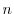

Before calculating dynamic non-bonded restraints, MODELLER determines which of the several routines is most appropriate and efficient for calculating the non-bonded atom pairs list. The user can use this variable to influence the selection, of either a straightforward search or a cell-based algorithm which hasdependency of CPU time versus size  . The latter algorithm is used when the maximal difference in residue indices of the atoms in the current dynamic restraints is larger than energy_data.nlogn_use, energy_data.contact_shell is less than 8Å, the necessary number of cells fits in an integer without overflow, and there is sufficient system memory to store the cells. The default value is 15.